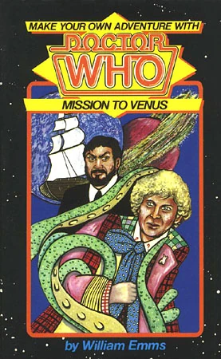

|
Mission to Venus
|
NOTE BASIC PLOT DOCTOR COMPANIONS MATERIALISATION CIRCUIT PREPARATORY READING CONTINUITY REFERENCES (1.3) "Peri was studying them with scientific interest." Peri being a botany student was infrequently implied on television, The Mark of The Rani and Timelash being two of the few times her skillset was applied. (4.3) "It was evident that, though the ambience was that of the nineteenth and twentieth centuries, this ship was capable of things undreamed of then." A bit of an elephant in the room is that the visual of a 19th/20th century sailing ship (complete with appropriately uniformed crew) gliding across the stars is highly reminiscent of Enlightenment. It's worth noting that this book is adapted from an unproduced Second Doctor script that would have originally been part of Season 4, and that this original draft simply took place on a space station. (5.6) "Oh, she had to admit that she liked you well enough, but you too had a tendency to dismount on both sides of the fence and ride off in all directions. Impetuous was the best word she could find to describe you. There was this tendency for you not only to go along with the Doctor, but even to jump onto some of his more extreme ideas and aid and abet them. A likeable character you had, in her opinion, but also certain flaws which could one day prove fatal. Why, for instance, did you keep drifting off into reveries at critical moments?" This is a fascinating bit of meta-text from Peri's perspective, describing the blank-slate 'you' she's travelling with as displaying qualities that imply you're always pausing before making decisions, just as the reader surely is. This contextualises the you in this book into an actual character within in the narrative. If you infer that this is the same character as Chris from the previous gamebooks, those serve as the times she's reflecting on here. (20.3) "It comes to five million universal credits. Not peanuts, is it?" The futuristic currency of credits was first mentioned in Carnival of Monsters and made many appearances in the revival series, starting with The Long Game. We get a vague approximation of what a single credit is worth in comparison to other currencies at the (unknown) date this story takes place: fifty Australian Dollars, twenty-two Pound Sterling and thirty-nine American Dollars. (21.2) "The books and films had been right, even down to his oily black hair." You meet a hallucinatory Count Dracula in a scene that is reminiscent of the robotic Dracula from The Chase. (23.4) "Peri gave the Doctor a dour look. 'Travelling with you is beginning to lose its charm,' she said." Peri expresses frustration and considers leaving the TARDIS, the exact same sentiment that causes the Doctor to take her to Ravalox in The Mysterious Planet. OLD FRIENDS AND OLD ENEMIES NEW FRIENDS AND NEW ENEMIES (4.2) The superstitious First-Lieutenant Teddler (described as having the same accent as the late President Kennedy) who figureheads a mutiny against Burrigan (13.9). Well intentioned, but responsible for making things easier for the villains. It's implied all members of the crew join him. Named are Charlie, who has bad breath (4.6), Davis, a mechanic (18.1), Logan (20.1) and Lieutenant Jackson (5.5). The named characters under the Imps' control are Todd (9.14) and the crew of the Medusa's sister ship, the Aran (23.3) While they’re presented as reanimated corpses controlled by the Imps, it's later implied that they’re are easily saved from the hypnosis, making this a rare adventure where everybody lives... assuming they still aren’t zombies. The Imps, a 'universal force of evil' (3.6) and 'parasites upon life itself' (17.3), according to the Doctor who has seemingly met them before. (Perhaps during that unproduced Second Doctor version of this same story?) While they could turn invisible or change form, they prefer to take the form of doll-like little children (3.6). (5.2) Two stowaways implied to be fictional hallucinations brought on by the Imps: Count Dracula (21.2) and Roge, a cheerful Australian stowaway who plans on robbing the ship and selling the Leechen to the black market (20.2).
CONTINUITY COCK-UPS PLUGGING THE HOLES [Fan-wank theorizing of how to fix continuity cock-ups] FEATURED ALIEN RACES (3.6) The Imps, who have a varied skillset which includes possessing sharp claws, causing machines to malfunction (9.10), turning invisible (13.2) and inducing odd comatose fantasy-states (10). Oh, and they can only speak in untranslatable, bird-like cooing. (11.2) The Tandars, unseen and barely described alien allies of humanity who are stationed on Venus. They're currently holding equally mysterious unnamed enemies at bay, and are suffering a loss of food: the Leechen are the only plant life they can safely eat. (19.3) The equally unseen Timbors, engaged in a bloody battle against a war fleet of humans. The commander of the Timbor fleet is apparently a vindictive man (19.4). Probably hold a relation to the Tandars, given their similar naming schemes and opposing relationships to humanity. (15.3) The invisible (so yes, also unseen) spirit-like unnamed aliens on a green planet who are fascinated by beings with corporeal forms. FEATURED LOCATIONS (15.3) A green planet with plentiful flora and fauna, where the sapient natives are invisible. (16) A possibly hallucinatory small colony of humans on a planet who are being terrorized by a robot uprising. (20.3) Planet Ferula, a planet of bandits, in an area referred to as 'bandit space', only visited for a sentence (20.4). (20.4) The Australian outback. Hallucinated/dreamed locations include a WW1 battlefield (10), a pirate ship (26), revolution-era France (25), a modern race car track (27), a stage where a sci-fi play about a spaceship is being rehearsed, somewhere in the twentieth century (8.2), a circus (22) and a spacecraft (12). ENDINGS (6) You choose to befriend the first sailor you see, who quickly tells you that the Leechen are food for the Xan: humanlike aliens who are forcing the crew to take care of the Leechen against their will, and have already imprisoned and eaten everyone but him. You convince the Doctor to help the sailor escape in the TARDIS, which never returns to the Medusa. You never realise that he fabricated every single line of his story because he simply wanted to abandon ship, and your gullibility has doomed the Medusa's voyage. (8) The imps force an actor from the twentieth century aboard the Medusa. He was performing a play about a spaceship and apparently takes method acting to such a level that the Imps could just send him forward to a real one. When the two of you touch, you're transported back to the play in his place, seemingly swapping your identities. Another actor attacks you with a prop dagger in the middle of rehearsals, but the mechanism that allows it to retract is jammed, so you get fatally stabbed by accident. This is all presented as if it's literally happening. (10) You try and attack an Imp in retaliation for it harming Peri, and it puts you into a comatose fantasy wherein you're a pilot fighting in the first World War. You get shot down and presumably die in real life. (11) Frustrated by the Doctor's leisurely attitude, you decide to smash open one of the jars containing Leechen with a fire axe. You're sent to see Commander Burrigan, who frustratedly informs you that you have destroyed the emergency food supply being delivered to one of humanity’s space allies. They'll starve to death and the Earth will be defenceless against enemies without their help. You're very embarrassed. (12) Your mind wanders into a scenario wherein you're an astronaut trying to find the source of a malfunction on a spacecraft. The fault is located, but you're stuck in orbit with only enough supplies for three months. (15) To the surprise of the Doctor and Peri, you join Teddler's side in the mutiny. You demand that he doesn't hurt your friends, to which he agrees. Teddler shifts the course of the Medusa away from Venus, allowing it to take you all somewhere completely random: a planet with friendly invisible natives who don't have physical forms. They treat you to a utopic life and ask you to slowly dismantle your ship, probably under hypnosis. Predictably you end up marooned, and the natives start to dissect you all to better understand corporeal forms. (16) After you're knocked out, you awake on a (likely hallucinated) planet where a small colony of humans are being terrorized by a robot uprising. You succeed in your mission to save them, but they've gotten so used to robots doing everything for them over the centuries that they can't make think properly on their own. They ask you to help and you're unable to refuse, staying there for the rest of your life and forgetting about the Medusa. (18) You volunteer to help repair the damage done by the meteorite. You get accidentally given a faulty spacesuit, which proves fatal when the mechanic you're assisting accidentally cuts through your lifeline and you're unable to alert him. The Medusa grows smaller and smaller in the distance as you float further and further into the lonely darkness of space. (19) To the surprise of everyone, you throw yourself at Teddler to force the gun out of his hands and stop the mutiny. Being a young teenager, you’re quickly overpowered and are rounded up with the others. Teddler shifts the course of the Medusa away from Venus, allowing it to take you all somewhere completely random: an area of space with a lot of gunships. A group of soldiers dressed in black mount the Medusa and refit it into a battleship to assist in their battle against a race of aliens called the Timbors. You're conscripted into the fight and help win the battle. Before you can be let go, it's discovered that all the captured Timbor ships are set with explosives to go off to take the enemy with them. Space is brightly lit for a few moments as the fleet explodes, including the ship you were standing in. (20) You go with some crewmen to investigate one of the cabins for suspicious activity, and find an Australian bandit named Roge. Despite not having anything to do with this time period and being a very close friend of the Doctor and Peri, you decide to betray them by joining Roge in his scheme to steal and sell the Leechen. You go back to Earth rich beyond your wildest dreams, but are instantly arrested by Space police. You lose everything and end up with a life sentence. (21) You go with Teddler to investigate one of the cabins for suspicious activity and find a hallucinatory Count Dracula. He completely drains you of your blood. (22) Your mind wanders into a scenario wherein you're an acrobat. A fellow acrobat has been poisoning your circus's animals so that the rival circus could have a monopoly, and you have to stop him before he poisons your beloved pet elephant Sheba. You succeed and have a happy ending as your rival is fired. It's presumed that you die in real life, slipping into this fantasy as a way to distract yourself from this fact. (24) You happen across Peri desperately hitting the side of the Galley door to escape a gigantic boiling water tank falling onto her. You open the door a bit too late, and the two of you are scalded and crushed. (25) You are compelled to touch the Imp's spacecraft, and it puts you into a comatose fantasy wherein you're the Scarlet Pimpernel. As just before you touch it you wonder if it can transport you in space and time like the TARDIS, it's entirely possible that were quite literally transported into the past and became a genuine historical version of the famous character. (26) The Leechen escape from their jars alongside a noxious gas, which puts you into a comatose fantasy wherein you're working on a Royal Navy ship under your Captain, Burrian. You battle against a pirate ship and win, returning your own skull and crossbones back to the mast and taking off your navy uniform disguises. For a year, you live happily off the riches you stole from them until Burrigan returns with a new ship. He says he got bored and offers you your old position back, which you happily accept. You and Burrigan continue your life of adventure on the high seas. In real life, you presumably survived the experience but never leave your comatose state. Oddly positive and detailed for a bad ending. (27) You are compelled to touch the Imp's spacecraft, and it puts you into a comatose fantasy wherein you're a reckless race car driver, accidentally killing yourself when you crash trying to beat your rival. This ending is expressly referred to as a dream. (28) The Doctor and Burrigan are cornered by the Leechen and the Imps, while Teddler smashes the ships controls, making a crash into Venus likely. He reasons it's better that everyone on the ship dies than let the Imps have free reign over the Venus colony. The Imps are terrified of dying in the crash and teleport back to their spaceship, but it turns out that Teddler outsmarted them: the image of Venus on the monitors was simply a reflection from light-years away. Burrigan forgives Teddler and his men for their mutiny. All of the 'dead' men under the Imps control have apparently just been mesmerized and wake up confused. The growing Leechen are still an issue, but the Doctor suggests that the crew simply wear their spacesuits and deprive the ship of oxygen to keep them under control until they reach Venus. The crews of the Medusa and the Aran thank the Doctor, you and Peri for your help, but the Doctor is impatient to be on his way. (The Good Ending.) IN SUMMARY - Dylan 'Malk' Carroll |
|
 |